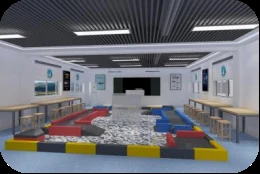
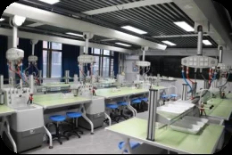

冠军背后，是日常的训练、长久的默契，也是一起成长的少年。
一所学校的精神THE SPIRIT OF OUR SCHOOL
脚下有根，
眼中有更远的世界。
求知，从认真观察眼前的世界开始。
在课堂里积累，在实践中发现，
在与他人的相处中，学会理解与担当。
从1955年出发，地中始终与一代代青年的成长同行。“关爱全体学生，推进整体进步”，让教育的目光落在每一个具体的人身上。
了解我们的学校 ↗NEWS & UPDATES
正在发生的地中
PEOPLE & CAMPUS
成长，有许多种模样。
相遇 · 连接 · 陪伴
一段共同的经历，一群并肩的伙伴。课堂之外，成长同样具体而鲜活。

课堂 · 讨论 · 发现
从接受知识，到主动提问。为讨论、协作和新的想法，留出空间。

LEARNING THROUGH EXPLORATION
教育教学 / 科学与实践
把问题带进课堂，
把发现带向生活。
科学精神，存在于每一次认真观察之中。
从提出问题、动手验证，到交流与修正，
让知识与真实的世界建立联系。
学科课堂实验实践跨学科学习
ROOTED IN TIME, OPEN TO TOMORROW
时间留下的，
是继续向前的力量。
以事实记录来路，以行动回应未来。
一所学校的起点
从创办之初，走到今天。时间沉淀为校园的记忆，也成为下一次出发的根基。
与科学精神同行
以李四光精神为校园文化特色，让观察、实践与探索，成为教育的日常。
从校园走向全国赛场
男篮获得2023—2024赛季中国高中篮球联赛全国冠军。成长，在共同努力中发生。